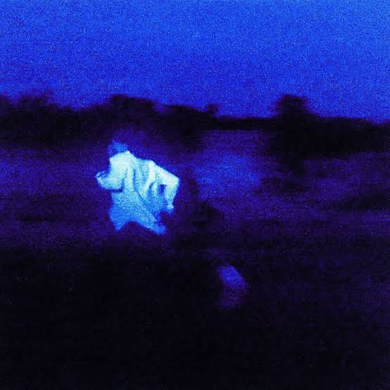

Daniel Caesar adalah arsitek melodi yang merajut nuansa R&B klasik dengan sentuhan gospel yang syahdu dan atmosferik. Lewat vokal falsetto yang lembut namun menghujam, ia menciptakan ruang sonik yang intim—seolah sedang membisikkan pengakuan dosa dan kerinduan langsung di telinga pendengarnya. Petikan gitar akustik yang minimalis berpadu dengan ketukan soul yang lambat menjadikan setiap karyanya terasa seperti pelukan hangat di tengah malam yang sunyi.
Musik yang jujur dan rentan ini menjadikannya suara bagi generasi Z yang kerap bergulat dengan rumitnya pencarian jati diri dan patah hati. Bagi generasi yang tumbuh di era serba cepat dan penuh tuntutan, lagu-lagu Daniel Caesar hadir sebagai tempat singgah untuk merayakan kerapuhan tanpa rasa malu. Ia berhasil menerjemahkan kegelisahan cinta modern menjadi puisi yang menenangkan, menjadikannya teman setia di berbagai daftar putar saat senja tiba atau ketika pikiran sedang riuh.
2.5M
Spotify Followers
1.8M
Monthly Listeners
3
Official Full Albums